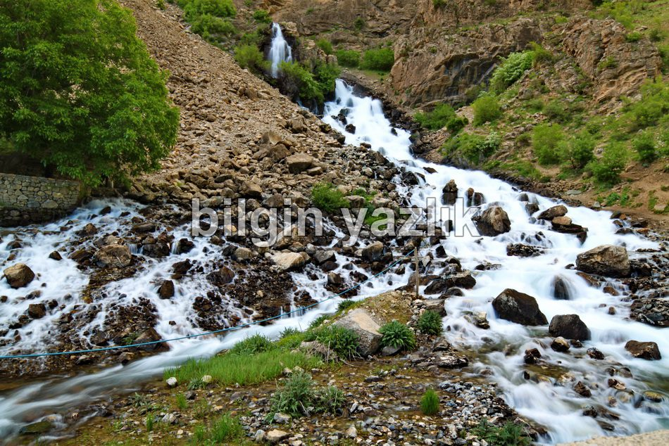
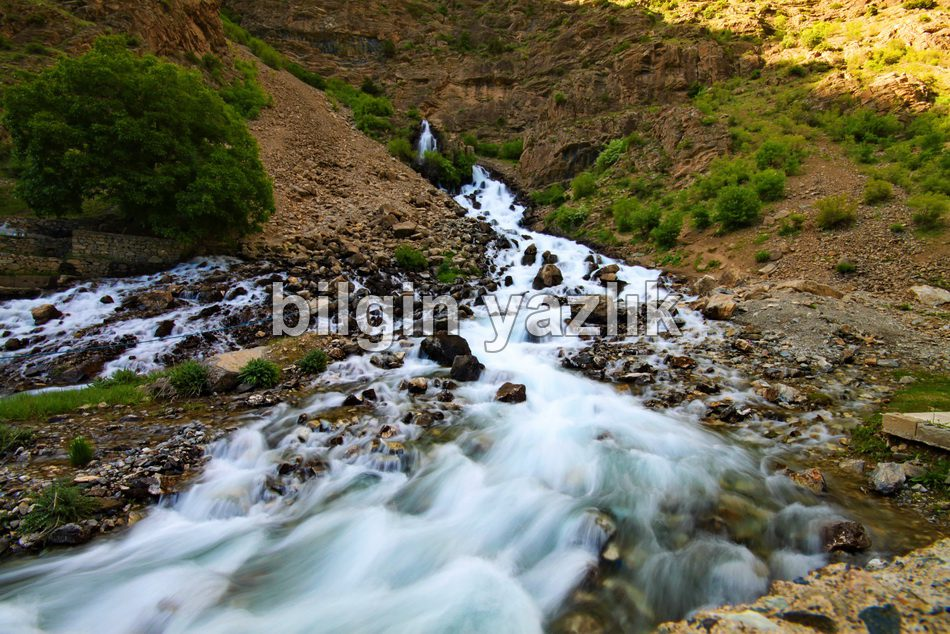
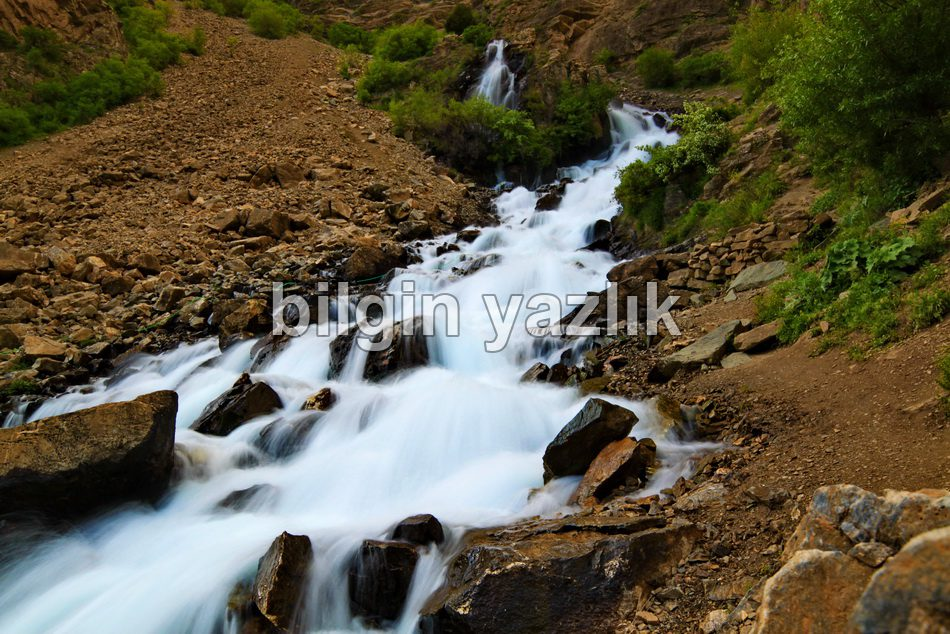
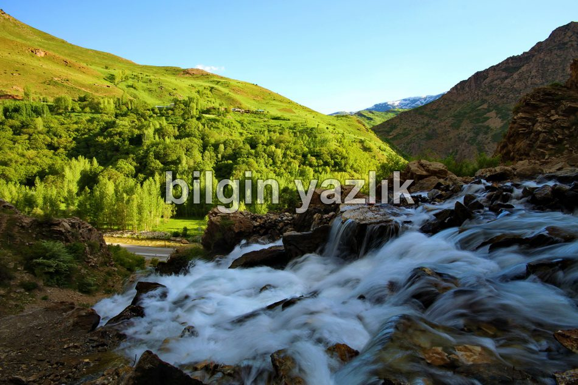
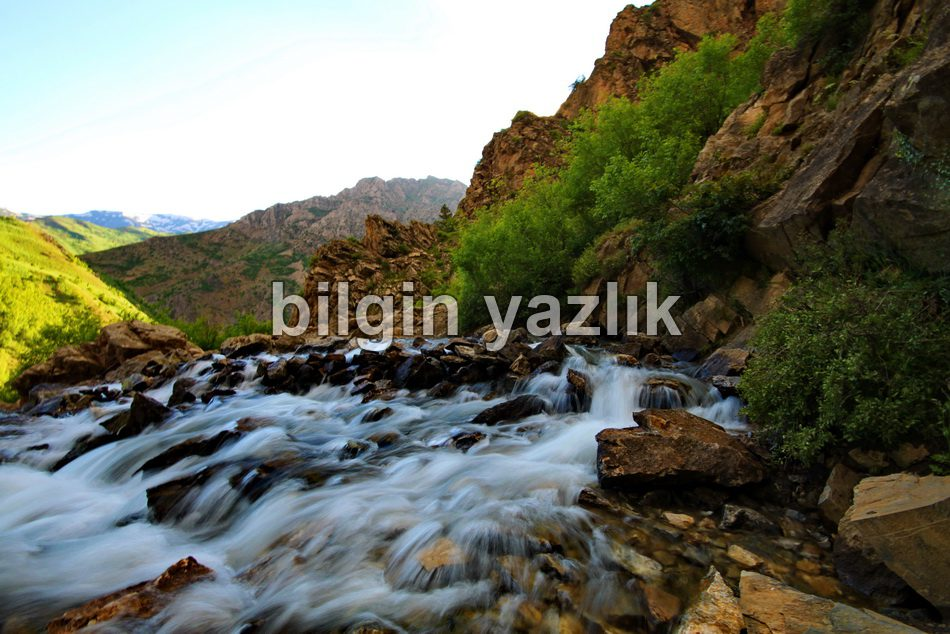

Kanispi
Van’dan Çatak’a giderken, Çatak girişinde yer alan şelalenin adıdır. Kanispi kelimesinin anlamı “beyaz kaynak” tır. Bu ismi almasının nedeni suyun bembeyaz bir görüntü arzetmesidir. Kanispi şelalesi dağ içinden fışkıran bir tatlı su kaynağının yüksek bir uçurumdan aşağı düşmesi ile oluşmaktadır. Bahar aylarında su miktarının bol olmasından ötürü şelalenin en güzel dönemi Mayıs ayıdır, sonraki aylarda su miktarı azalmaktadır. Şelale civarında piknik yerleri ve lavabo mevcuttur, ailecek piknik yapılabilir. Her yıl Mayıs ayının son haftası Çatak’ta Kanispi festivali düzenlenmektedir. Buz gibi sularında dolaşmak ve kaynağına kadar çıkmak için mutlaka ziyaret edilmelidir.





Bu yazı taliyol arşivinden taşınmıştır. · özgün kayıt